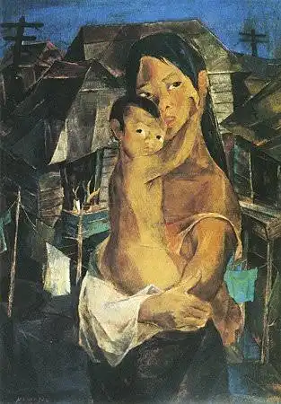

1. Madonna of the Slums by Vicente Manansala
Madonna of the Slums by Vicente Manansala (1950) is a painting that shows a mother and child who migrated from the countryside to Manila after World War II, only to face poverty in the city. The artwork reflects the struggles of urban migration—showing how hope for a better life often turned into hardship. It highlights poverty, resilience, and the human spirit, reminding viewers of the social realities in postwar Philippines.
Title: Madonna of the Slums
Artist: Vicente Manansala
Year: 1950
2. Spoliarium by Juan Luna
Spoliarium by Juan Luna (1884) is a monumental painting that shows Roman gladiators being dragged after battle, symbolizing human suffering and injustice. The artwork reflects the oppression experienced by Filipinos under Spanish rule. It serves as a powerful reminder of sacrifice, resilience, and the fight for freedom, inspiring unity and nationalism among the Filipino people.

Title: Spoliarium
Artist: Juan Luna
Year: 1884
3. The Blood Compact by Juan Luna
The Blood Compact by Juan Luna (1886) portrays the historic Sandugo between Spanish explorer Miguel López de Legazpi and Bohol chieftain Datu Sikatuna, where they sealed their friendship and alliance by drinking wine mixed with their own blood. The painting symbolizes unity, loyalty, and mutual respect despite differences in race and culture. It also reflects themes of diplomacy and the blending of Filipino and foreign influences that shaped the nation’s history.

Title: The Blood Compact
Artist: Juan Luna
Year: 1886
4. Las Virgenes Cristianas Expuestas al Populacho by Félix Hidalgo
Las Virgenes Cristianas Expuestas al Populacho (1884) is a history painting by Félix Resurrección Hidalgo. The painting depicts two Christian virgins stripped of their garments and exposed to a hostile crowd in Ancient Rome. The work is a powerful commentary on injustice, the abuse of power, and the suffering of the innocent. It also carries allegorical weight for Filipinos under colonial rule, suggesting that Filipino dignity could be stripped and exposed in unjust ways—and yet, their spirit could remain.

Title: Las Virgenes Cristianas Expuestas al Populacho
Artist: Félix Hidalgo
Year: 1884
5. La Laguna Estigia by Félix Hidalgo
La Laguna Estigia (The River Styx) is a famous painting by Félix Resurrección Hidalgo. It portrays souls being ferried across the mythical River Styx in Greek mythology, symbolizing the passage from life to death. Thee painting reflects themes of mortality, human struggle, and the inevitability of death. It also shows Hidalgo’s mastery of form and emotion, blending classical mythology with a universal message about the fragility of human life and the journey of the soul.

Title: La Laguna Estigia
Artist: Félix Hidalgo
Year: 1887